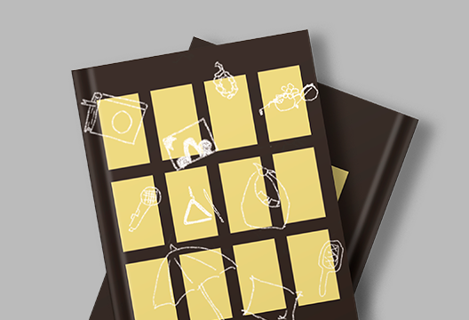
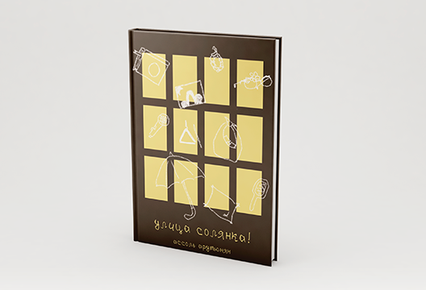

Книга для подростков "Улица Солянка!"
Вся наша жизнь - одни перемены. Короткие или затянувшиеся, - отныне это не имеет никакого смысла. Прошлое всё больше и больше пытается ворваться в ежедневную рутину и начать всё с начала. Именно тогда всё и "выползает" наружу: все скрытые огромным слоем пыли тайны и заговоры, "утраченные" воспоминания и когда-то очень близкие люди. Данный сборник содержит в себе несколько рассказов, объединённые одной сюжетной линией. Это память, которую хочется пронести сквозь года в сегодняшний день ради мимолётной ностальгии.
 - Эта книга продумывалась более года, но была написана за три дня и четыре ночи.
- В сборнике рассказов затронуты темы взаимоотношений в тяжёлый период, также присутствует тема тяжёлого прошлого, которое сложно отпустить.
- Иллюстрации и обложка книги были отрисованы самим автором.
- В каждом рассказе прототипом возглавляющих персонажей являются реальные люди, с которыми автор когда-либо был знаком.